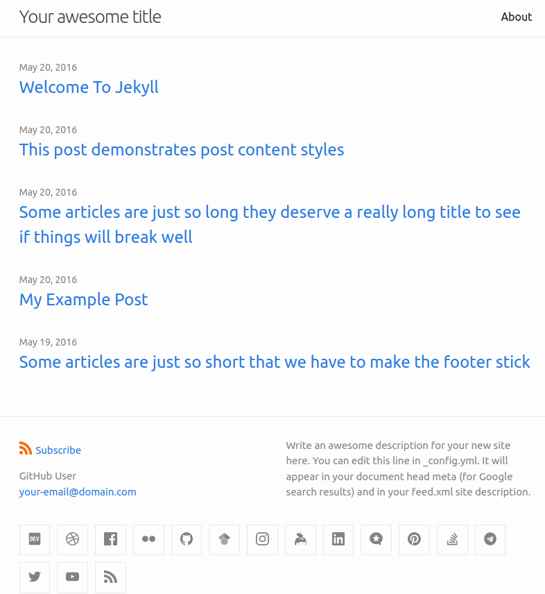

Tema minima
Hoy en día, por suerte o por desgracia, la imagen cuenta mucho. Por esta razón, Jekyll proporciona el concepto de tema con el que poder personalizar fácilmente la estética de nuestro sitio web. En esta lección, vamos a introducir los temas, particularizando en el tema predeterminado que viene de fábrica con Jekyll que se conoce como minima.
Al finalizar, sabrá:
-
Que es un tema en Jekyll.
-
Dónde previsualizar el tema minima.
-
Cómo configurar el tema.
-
Cómo personalizar el tema.
-
Qué archivos de diseño proporciona.
Introducción
Un tema (theme) proporciona el estilo o la estética del sitio web. En GitHub Pages, para indicar el tema que deseamos usar, necesitamos usar las opciones theme o remote_theme del archivo de configuración _config.yaml. La diferencia es sutil, pero importante. Con remote_theme, indicamos el nombre del tema y, además, le indicamos a Jekyll que use la versión más reciente de su repositorio Git. Mientras que con theme, la existente localmente, que no tiene por qué ser la última.
Entre los temas soportados nativamente por GitHub Pages, encontramos:
| Tema | URL |
|---|---|
| architect | https://github.com/pages-themes/architect |
| cayman | https://github.com/pages-themes/cayman |
| dinky | https://github.com/pages-themes/dinky |
| hacker | https://github.com/pages-themes/hacker |
| leap-day | https://github.com/pages-themes/leap-day |
| merlot | https://github.com/pages-themes/merlot |
| midnight | https://github.com/pages-themes/midnight |
| minima | https://github.com/jekyll/minima |
| minimal | https://github.com/pages-themes/minimal |
| modernist | https://github.com/pages-themes/modernist |
| slate | https://github.com/pages-themes/slate |
| tactile | https://github.com/pages-themes/tactile |
| time-machine | https://github.com/pages-themes/time-machine |
Cada tema dispone de su propia configuración. No basta con elegir el tema, hay que estudiarlo y saber configurarlo para sacarle todo su jugo. En nuestro caso, nos centraremos en minima.
El tema minima (minima theme) del propio Jekyll es posiblemente uno de los más utilizados, cuando estamos aprendiendo, por su sencillez. Por esta razón, vamos a centrarnos en él, a modo de ejemplo de configuración, pero puede que otros temas tengan una configuración diferente. Vamos a ver aspectos básicos, es recomendable echar un vistazo a su sitio web indicado en la tabla anterior. Por ahora, bastará con previsualizar el tema en https://jekyll.github.io/minima para tener una ligera idea de cómo será nuestro sitio:

Comencemos con un sencillo ejemplo ilustrativo del archivo _config.yaml, recuerde que este archivo debe ubicarse en el directorio del sitio:
title: Titulo del sitio
tagline: Breve descripción del sitio
description: Descripción más extensa del sitio
baseurl: /
google_analytics: G-XXXXXXXXXX
remote_theme: jekyll/minima
minima:
skin: dark
social_links:
- platform: github
user_url: https://github.com/cuenta
# cualquier otra variable
# accesible con la variable global site.
Usaremos remote_theme para que utilice la versión más reciente de este tema. Este tema utiliza parte de su configuración de la propiedad minima del archivo de configuración. No toda, observe que la etiqueta de seguimiento de Google Analytics se indica en la propiedad google_analytics porque es independiente del tema y lo usarán probablemente la mayoría de ellos.
Un ejemplo de sitio web que utiliza esta plantilla es el del proyecto Akromio, https://akromio.com. Échale un vistazo y, a continuación, revise su código en su repositorio de GitHub, https://github.com/akromio/akromio.github.io.
Hoja de estilo de minima
El tema minima viene con varias hojas de estilo, las cuales denomina skins. La que deseamos utilizar la indicaremos mediante minima.skin. Sus posibles valores son:
| Skin | Descripción |
|---|---|
| classic | Estilo predeterminado y suave. |
| dark | Estilo clásico oscuro. |
| auto | Estilo adaptable de los dos anteriores. |
| solarized-light | Estilo solarizado suave. |
| solarized-dark | Estilo solarizado oscuro. |
| solarized | Estilo adaptable de los dos anteriores. |
Los estilos auto y solarized usan el estilo suave u oscuro atendiendo a la configuración del navegador del usuario.
Personalización del estilo
Si necesitamos sobrescribir aspectos de estilo como, por ejemplo, el tipo de letra o el color, tenemos que crear el archivo style.scss en la carpeta /assets/css del directorio del sitio. Este archivo debe tener un encabezamiento, las reglas de importación indicadas y, a continuación, las nuestras:
---
---
@import "minima/skins/{{ site.minima.skin | default: 'classic' }}";
@import "minima/initialize";
// aquí nuestras reglas
No olvide indicar el encabezamiento, vacío pero hay que indicarlo.
Archivos de diseño
Recordemos que un archivo de diseño (layout file) describe cómo se presentará un contenido al usuario. Es recomendable utilizar aquel diseño que mejor se adapte a nuestro contenido, no es lo mismo presentar una página que un artículo. minima define los siguientes archivos de diseño:
| Archivo | Descripción |
|---|---|
| default | Diseño básico de un archivo de contenido. |
| home | Diseño recomendado para la página principal del sitio, hereda default. |
| page | Diseño recomendado para una página, hereda default. |
| post | Diseño recomendado para un artículo, hereda default. |
Si desea echar un vistazo a estos archivos, consulte el directorio _layouts del tema, disponible en https://github.com/jekyll/minima. Le recomiendo que lo haga porque así podrá ir familiarizándose con los archivos de diseño. Recuerde que cada tema define los suyos.
Sobrescritura de plantillas del tema minima
minima lo que contiene son plantillas HTML, hojas de estilo y otros archivos que utiliza Jekyll para generar el sitio web. En ocasiones, puede ser muy útil personalizar ciertas plantillas de minima. Para ello, eche un vistazo al repositorio Git, más concretamente al directorio _includes. En él, se encuentran varias plantillas predeterminadas, que podemos sobrescribir en nuestro sitio web, como, por ejemplo:
| Plantilla | Descripción |
|---|---|
| head.html | Contenido del elemento <head>. |
| custom-head.html | Contenido personalizado a añadir al <head>. |
| google_analytics.html | Código del módulo de Google Analytics. |
| header.html | Encabezamiento del cuerpo de la página. |
| footer.html | Pie del cuerpo de la página. |
| social.html | Listado de redes sociales. |
Para sobrescribir una de ellas, no tiene más que crear la carpeta homónima y el archivo homónimo en el directorio del sitio. Por ejemplo, si desea modificar el pie de página, deberá añadirlo a su proyecto en /_includes/footer.html, considerando / como el directorio del sitio. He aquí un ejemplo de este archivo:
<footer class="site-footer h-card">
<data class="u-url" href="{{ "/" | relative_url }}"></data>
<div class="wrapper">
<div class="social-links">
{%- include social.html -%}
</div>
<div>
Copyright © {{ site.ws.year }} {{ site.brand.author }}.
</div>
</div>
</footer>
Puede copiar el contenido de la plantilla del repositorio de minima y adaptarlo a sus necesidades.
Redes sociales en el tema minima
Si tiene redes sociales, muy probablemente querrá añadirlas. Para ello, utilice la propiedad minima.social_links, una lista donde cada elemento representa una red social. La red social se indica mediante la propiedad platform y su valor puede ser uno de los siguientes: devto, dribbble, facebook, flickr, github, google_scholar, instagram, keybase, linkedin, microdotblog, pinterest, stackoverflow, telegram, twitter o youtube. El URL de su cuenta en la red social se indica con la propiedad user_url. Veamos un ejemplo ilustrativo:
minima:
social_links:
- {platform: github, user_url: "https://github.com/akromio"}
- {platform: twitter, user_url: "https://twitter.com/siacodelabs"}
Formato de fecha en el tema minima
En ocasiones, podemos mostrar fechas con Liquid como, por ejemplo, la del momento en el que Jekyll generó el sitio web, la cual está disponible en site.time. Las fechas se pueden formatear mediante el filtro date o bien indicar un formato predeterminado en minima.date_format. Para los elementos de la fecha, consulte https://shopify.github.io/liquid/filters/date. He aquí un ejemplo:
minima:
date_format: "%d-%m-%Y %H:%M"
Encabezamiento del cuerpo de las páginas
De manera predeterminada, minima muestra, en lo alto de la página, el título del sitio web y un enlace a cada una de las páginas que tiene. Es posible indicar de qué páginas mostrar un enlace directo en el encabezamiento. Para ello, utilizaremos minima.header_pages. Sirva lo siguiente como ejemplo:
minima:
header_pages:
- about.md
- portfolio.md
Ojo, aquellas páginas que están asociadas a colecciones no se mostrarán.
Personalización del cuerpo de las páginas con colecciones
Si ha definido colecciones en el archivo de configuración _config.yaml, puede conseguir un encabezamiento con el título del sitio web y el título de cada colección sobrescribiendo la plantilla header.html. La manera más sencilla es coger el archivo del repositorio de minima y copiarlo al directorio _layouts del directorio del sitio. Y modificar el bloque siguiente como sigue:
<div class="trigger">
{%- for coll in site.collections -%}
{%- if coll.title -%}
{%- assign first = coll.docs | sort: "order" | first -%}
<a class="page-link" href="{{ first.url | relative_url }}">{{ coll.title | escape }}</a>
{%- endif -%}
{%- endfor -%}
</div>